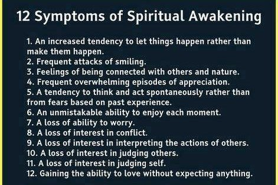

Oh dear.
See that meme above?
Such an unfair unreasonable illogical crock of... carrot... it is.
Look at the goal it creates.
The Better-Me-If-Only goal.
Look at the dissatisfaction it creates with what you actually are and what you actually have and what you actually experience.
It’s cruel, really.
This meme basically tells people who hurt and who feel inadequate and insufficient already (aka pretty much everyone), that there’s a better way to live and a better way to be and they’re not it and they don’t have it.
Yeah that’s kind.
And peaceful.
It’s like dangling a picture of a unicorn and saying “Hey unicorns are out there! You’re missing out by not having one. Other, better people have found one and you should take care of this lack in yourself by finding one too!"
Pssst… little secret...
There are no unicorns.
Can you see that, even just looked at logically, this mythology is nonsensical?
I mean really, other than its saying so, is there any direct evidence that the “symptoms” described in the meme are accurate?
Is this where you say, “Well I know someone who has achieved this! There’s my guru! I myself live exactly this way; this is indeed how it is for me!”
Gosh I hope not.
Because let’s just consider for a minute. Think about losing the ability to worry, for example.
Where would the “ability to worry” go, if it got lost? What dark alley?
Or “frequent attacks of smiling” and the “unmistakable (hey it’s unmistakable!) ability to enjoy each moment.”
Um, what?
Are you aiming to smile through the death of a loved one, physical pain, a lost job, a disinterested spouse?
Sure let’s aim for a kind of coma-like affect in all situations. That sounds like an admirable goal.
Surely that’ll be better than… oh I dunno… feeling stuff.
I mean, is only blissed-out non-worried non-conflict acceptable as an experience in life?
What’s wrong with sadness, anger, fear, humiliation?
We could as well say only white is an acceptable color and we should somehow “get beyond” red, purple and green. Because those are not enlightened colors.
So yeah yeah, ok, but this is all really no biggie though, right?
That meme and what it represents are just some words saying what a lot of people believe, or more likely hope is true.
Seems harmless enough.
Except that so many people are encouraged to chase enlightenment by trying to attain something they don’t have.
Something that may very well be simply non-existent.
In which case, there’s never going to be any ‘finding’ that way.
Which can only lead to increased disappointment and failure.
Which leads to more searching for enlightenment…
to get over the disappointment and failure.
And increased pain and failure is something many people can little afford in their lives.
So maybe it’s time to try something different.
Maybe it makes more sense to notice the actual present, what’s actually here, what’s actually experienced.
As it is.
Actually.
And to include everything in that present…judgments, non-smiling, interpretations, worrying and all.
Maybe we might look to see if the present is so very terrible or so very in need of repair and correction.
Because while we’re busily focused on finding that awakening and fixing what’s judged to be broken here and now…
We may not be open to noticing what’s truly already here and now…
because we’re focused so intently on what isn’t here.
And really, can we ever know what’s already right in front of us, right here, right now, when we’re scanning the horizon for the unicorn?
Chasing The Unicorn
